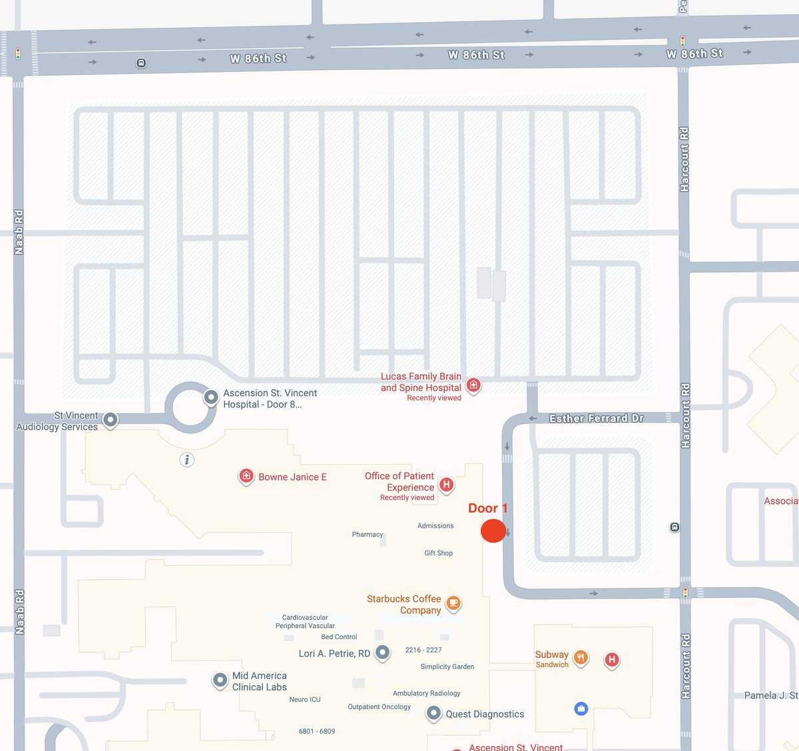
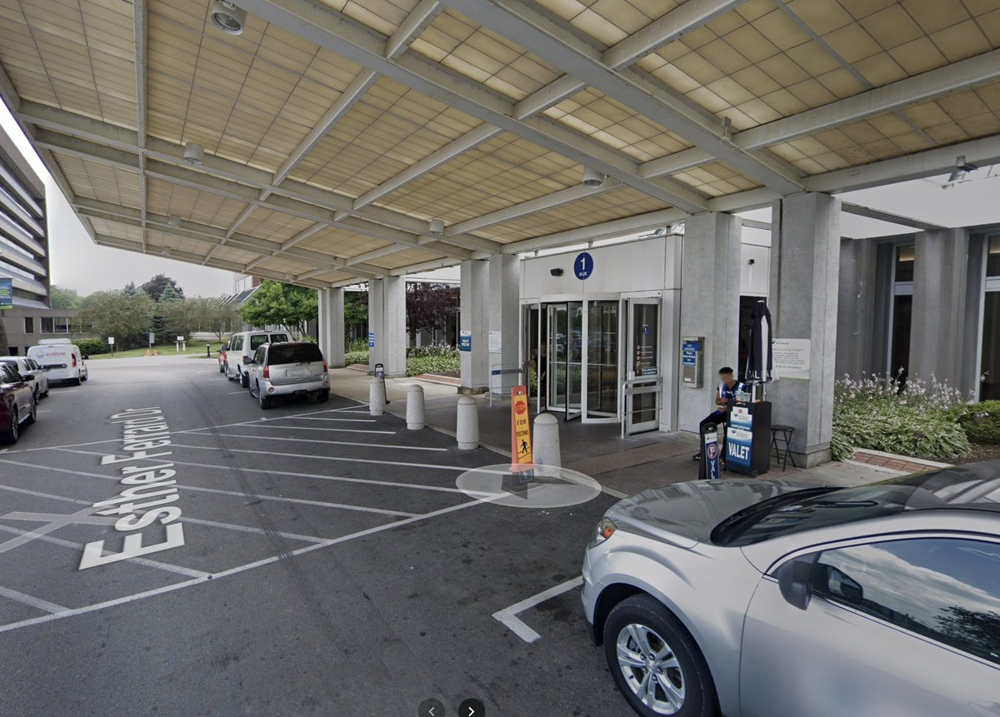

St. Vincent — 86th St., Door #1
Directions
Door #1 is on Esther Ferrand Dr., on the east side of the hospital campus. Free valet parking is available at the door (covered drop-off canopy with a blue "1" sign).
Easiest access: enter Esther Ferrand Dr. from Harcourt Rd. (east side). A slightly longer route from Naab Rd. (west side) loops through the hospital campus.

Door #1 is marked in red. The big surgery parking lot is across Esther Ferrand Dr. — pull up to the covered canopy for valet, or park in the lot and walk over.

Look for the covered drop-off canopy with the blue "1" sign. The valet stand is right at the door.
From W 86th St., turn SOUTH onto Harcourt Rd. After about 2 blocks, turn RIGHT (WEST) onto Esther Ferrand Dr. The covered Door #1 entrance with the blue "1" sign is immediately on your LEFT. Pull under the canopy for valet drop-off, or continue past it and park in the surgery parking lot on your right.
From W 86th St., turn SOUTH onto Naab Rd. Enter the hospital campus, follow the loop around (past the round-about by St. Vincent Audiology), and continue east along the front of the hospital. Esther Ferrand Dr. runs along the east side of the building — Door #1 is on the south end of that drive, on your RIGHT as you head south. Valet is at the door.
If you end up on W 86th St. heading west past Naab Rd., or on Harcourt Rd. heading south past Esther Ferrand Dr., circle back. The hospital campus is bounded by W 86th St. (north), Naab Rd. (west), and Harcourt Rd. (east).
If you get lost or are running late, call Pediatric Preop directly: (317) 338-5851. For other questions about your child's procedure, call our office at (317) 338-9450.